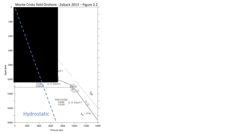
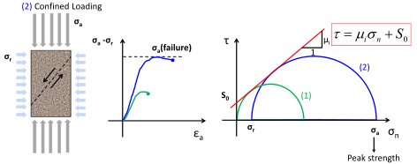
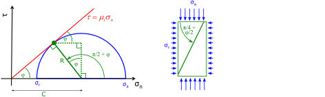
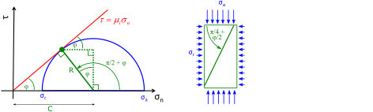

Next: Applications Up: Determination of normal and Previous: Mohr's circle method Contents
The following subsection describes the procedure to calculate stresses
on an arbitrary plane given its orientation respect to the geographical coordinate system
 and the in-situ stress tensor of principal stresses
and the in-situ stress tensor of principal stresses
 (given its principal values and principal directions).
(given its principal values and principal directions).
The first step consists on defining the principal stress coordinate system and the geographical coordinate system (both right-handed coordinate systems).
 for
for  ,
,
 for
for  , and
for
, and
for  (Fig. 5.19). The stress tensor is termed
in this coordinate system.
pointing in North direction,
pointing in East direction, and
pointing down in direction of increasing depth (Fig. 5.19). We will refer this basis as the “NED” basis. The stress tensor is termed
(Fig. 5.19). The stress tensor is termed
in this coordinate system.
pointing in North direction,
pointing in East direction, and
pointing down in direction of increasing depth (Fig. 5.19). We will refer this basis as the “NED” basis. The stress tensor is termed
 in this coordinate system.
in this coordinate system.
The second step involves constructing a change of basis matrix  from the Principal Stress to the Geographical Coordinate system.
This matrix depends on the projections of the elements of the new base on the old base according to the cosines of the director angles ,
from the Principal Stress to the Geographical Coordinate system.
This matrix depends on the projections of the elements of the new base on the old base according to the cosines of the director angles ,  , and .
Table 5.3 summarizes the meaning of , , and for cases in which vertical stress is a principal stress.
, and .
Table 5.3 summarizes the meaning of , , and for cases in which vertical stress is a principal stress.
| Normal faulting | Strike slip | Reverse faulting | |
| Azimuth of | Azimuth of  |
Azimuth of |
|
|
 |
 |
|
|
|
|
Check out this link https://mybinder.org/v2/gh/johntfoster/rotation_widget/master?filepath=rotation_widget-rise.ipynb for an animation of , , and in arbitrary directions.
![\includegraphics[scale=0.65]{.././Figures/split/6-33.pdf}](img553.svg) |
With the matrix , we can calculate the stress tensor
as a function of
,
 |
(5.6) |
and therefore:
| (5.7) |
where  stands for “transpose”.
PROBLEM 5.5: Calculate
in a normal faulting stress regime case ( MPa, MPa, MPa) with azimuth of N-S.
MPa, MPa, MPa) with azimuth of N-S.  is a principal stress.
is a principal stress.
SOLUTION

PROBLEM 5.6: Calculate
in a strike-slip faulting stress regime case ( MPa, MPa, MPa) with azimuth of N-S. is a principal stress.
SOLUTION
PROBLEM 5.7: Calculate
in a reverse faulting stress regime case ( MPa, MPa, MPa) with azimuth of E-W. is a principal stress.
SOLUTION
PROBLEM 5.8: Calculate
in a strike-slip faulting stress regime case ( MPa, MPa,
MPa, MPa,  MPa) with azimuth of being 135
MPa) with azimuth of being 135 . is a principal stress.
. is a principal stress.
SOLUTION
The third step consists in defining the fault plane coordinate system.
The coordinate system basis is comprised of  (dip),
(dip),  (strike), and
(strike), and  (normal) vectors: d-s-n right-handed basis.
The three vectors depend solely in two variables:
(normal) vectors: d-s-n right-handed basis.
The three vectors depend solely in two variables:  and
and  .
.
The fourth (and last) step consists in projecting the stress tensor based on the geographical coordinate system onto the fault base vectors.
The stress vector acting on the plane of the fault is  (note that is not necessarily aligned with
(note that is not necessarily aligned with
 ,
,
 or
) and is calculated according to:
or
) and is calculated according to:
| (5.8) |
The total normal stress on the plane of the fault is (aligned with ):
 |
(5.9) |
The effective normal stress on the fault plane is
 .
The shear stresses on the plane of the fault is aligned with
and
are:
.
The shear stresses on the plane of the fault is aligned with
and
are:
 |
(5.10) |
The dot product is used in all these vector to vector multiplications. The geometrical meaning is the projection of one vector onto the other.
The effective normal stress  and absolute shear
and absolute shear
 can also be calculated with the following equations:
can also be calculated with the following equations:
|  | (5.11) |
 |
(5.12) |
The  is the angle of the shear stress
is the angle of the shear stress
 with respect to
(horizontal line) and quantifies the direction of expected fault movement in the fault plane.
with respect to
(horizontal line) and quantifies the direction of expected fault movement in the fault plane.
 |
(5.13) |
PROBLEM 5.9: Calculate  , , ,
, , ,  , and for a fault with strike 000 and dip 60E in a place with normal faulting stress regime (
, and for a fault with strike 000 and dip 60E in a place with normal faulting stress regime ( MPa,
MPa,
 MPa,
MPa,
 MPa) with azimuth of equal to 90. is a principal stress.
MPa) with azimuth of equal to 90. is a principal stress.
SOLUTION
![\includegraphics[scale=0.60]{.././Figures/split/6-42.pdf}](img592.svg)
PROBLEM 5.10: Calculate , , , , and for a fault with strike 060 and dip 90 in a place with strike-slip stress regime ( MPa,
MPa,
MPa) with azimuth of equal to 120. is a principal stress.
MPa,
MPa,
MPa) with azimuth of equal to 120. is a principal stress.
SOLUTION
PROBLEM 5.11: Calculate , , , , and for conjugate faults with strike 045 and 225 both with dip 60 in a place with normal faulting stress regime (
 psi,
psi,
 psi,
psi,
 psi) with azimuth of equal to 90. is a principal stress.
psi) with azimuth of equal to 90. is a principal stress.
SOLUTION
![\includegraphics[scale=0.60]{.././Figures/split/6-45.pdf}](img601.svg)
PROBLEM 5.12: Calculate , , , , , and
 for a fault with strike 120 and 70 dip in a place with reverse faulting stress regime (
for a fault with strike 120 and 70 dip in a place with reverse faulting stress regime (
 psi,
psi,
psi,
psi,
 psi) with azimuth of equal to 150 and pore pressure
psi) with azimuth of equal to 150 and pore pressure  psi. is a principal stress.
psi. is a principal stress.
SOLUTION
![\includegraphics[scale=0.60]{.././Figures/split/6-46.pdf}](img606.svg)
![\includegraphics[scale=0.60]{.././Figures/split/6-39.pdf}](img570.svg)